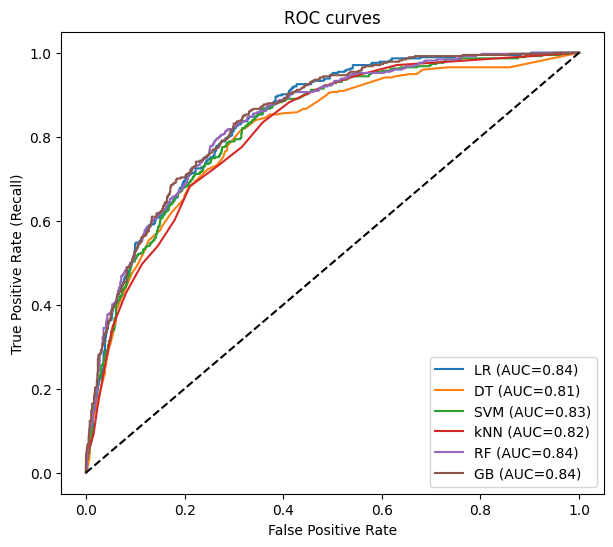
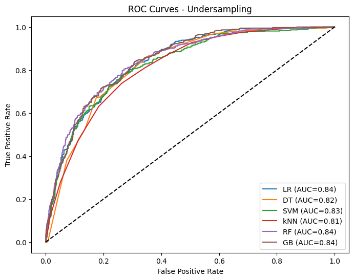
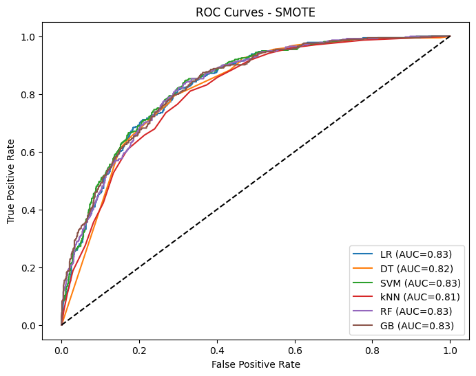

Customer Churn
Prediction.
A comparative classification study exploring how model choice and class-imbalance strategies affect the ability to identify customers likely to churn.
Project overview.
Reported values below are taken from the notebook's saved outputs, not illustrative results.
Customer records in the uploaded notebook.
Classification algorithms evaluated.
Original data, undersampling and SMOTE.
From data to evaluation.
The notebook follows the same evaluation approach across six models and three class-balance strategies.
Data preprocessing
Converted TotalCharges to numeric, filled its missing values with zero, dropped customerID, encoded categorical columns and used a stratified 80/20 train–test split.
Six classifiers
Logistic Regression, Decision Tree, SVM, k-NN, Random Forest and Gradient Boosting.
Three training strategies
Compared the original training distribution with RandomUnderSampler and SMOTE, using training pipelines during hyperparameter selection.
Measured trade-offs
Used confusion matrices, accuracy, recall, precision, cross-validated F1 during tuning, and ROC curves to examine model behavior.
Accuracy vs. recall.
Test-set results copied from the saved comparison table. All values are proportions rounded to three decimals.
| Model | Original acc. | Under acc. | SMOTE acc. | Original recall | Under recall | SMOTE recall |
|---|---|---|---|---|---|---|
| Logistic Regression | 0.801 | 0.744 | 0.780 | 0.551 | 0.775 | 0.684 |
| Decision Tree | 0.788 | 0.732 | 0.735 | 0.524 | 0.783 | 0.773 |
| SVM | 0.789 | 0.730 | 0.779 | 0.527 | 0.789 | 0.668 |
| k-NN | 0.771 | 0.698 | 0.732 | 0.540 | 0.810 | 0.735 |
| Random Forest | 0.799 | 0.749 | 0.765 | 0.511 | 0.797 | 0.693 |
| Gradient Boosting | 0.801 | 0.737 | 0.755 | 0.511 | 0.799 | 0.690 |
Acc. = accuracy; Under = random undersampling. The same held-out test set is used for comparison in the notebook.
What the results show: Undersampling raised recall substantially for every model, while generally reducing accuracy. For example, Logistic Regression recall increased from 0.551 to 0.775, while accuracy decreased from 0.801 to 0.744. Choosing a final model therefore depends on whether missing churners or generating false alarms matters more.
ROC curves.
These are the actual three ROC plots saved as images in the uploaded Jupyter notebook.



What I learned from the comparison.
Model selection is contextual
Original-data models delivered higher overall accuracy, but missed more of the churn cases. Undersampling improved sensitivity at the cost of more positive predictions and lower precision.
Imbalance handling changes the trade-off
SMOTE usually produced performance between the original-data and undersampling setups. Comparing recall alongside accuracy is essential when the positive class is less common.
Interpretations are drawn from the saved test metrics. The notebook does not establish deployment performance, business cost savings or a universally best model.
Explore the implementation.
The original Jupyter notebook contains preprocessing, training, hyperparameter searches, confusion matrices and ROC analysis.
View GitHub repository ↗